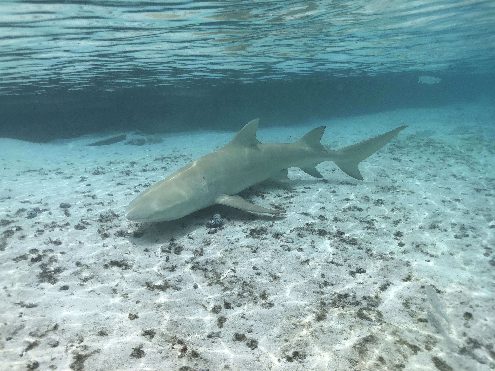
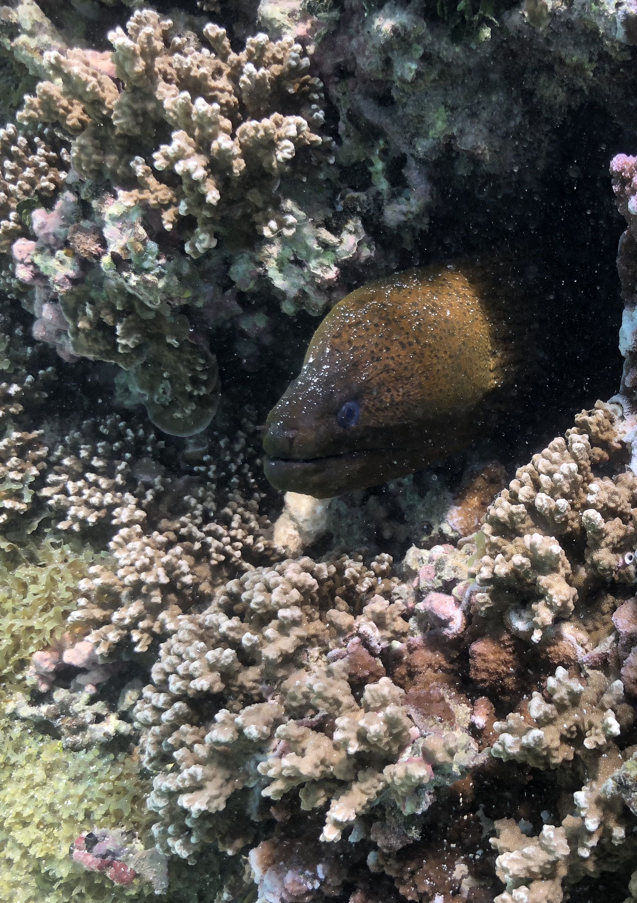
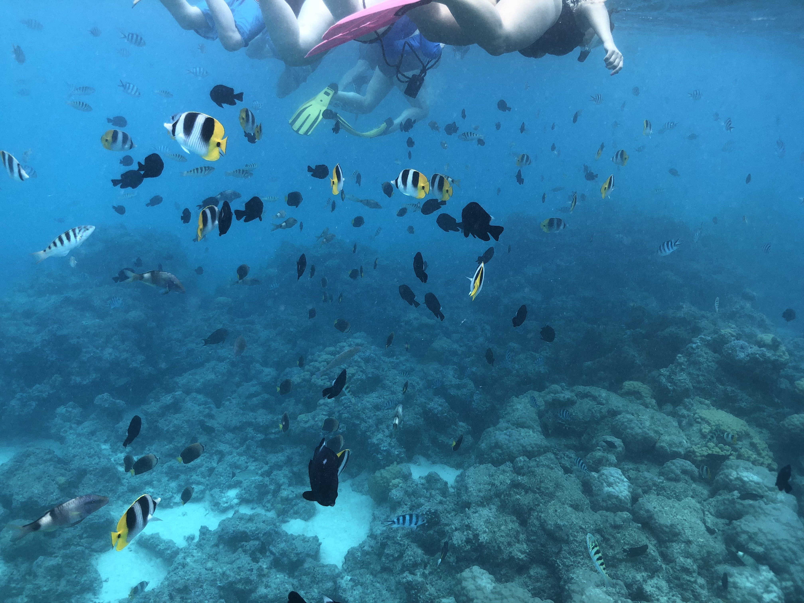
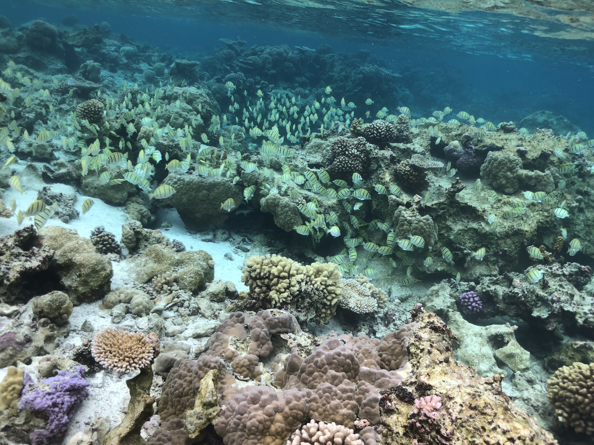
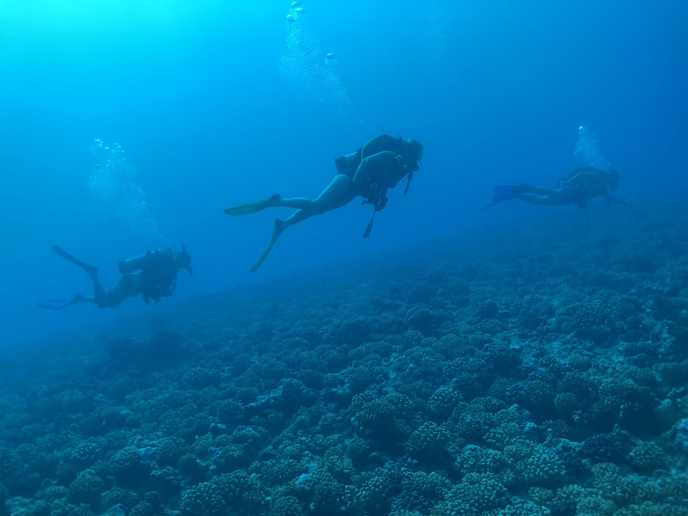
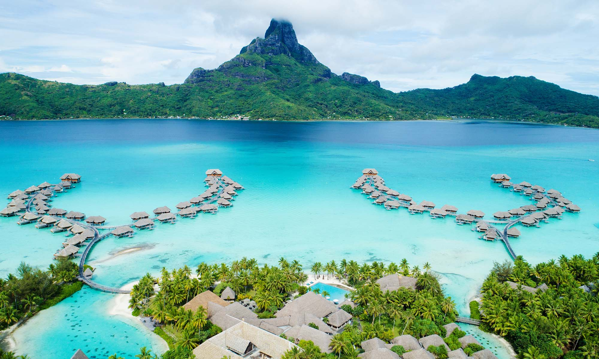

Statistics
|
Population |
10,605 as of 2017 |
|
Land mass: |
12 sq miles (30.55 sq km) |
History
The island was inhabited by Polynesian settlers around the 4th century C.E. The first European sighting was made by Jakob Roggeveen in 1722.
James Cook sighted the island on 29 July 1769, using a Tahitian navigator, Tupaia. The London Missionary Society arrived in 1820 and founded a Protestant church in 1890. Bora Bora was an independent kingdom until 1888 when its last queen Teriimaevarua III was forced to abdicate by the French who annexed the island as a colony.
World War II
In World War II the United States chose Bora Bora as a South Pacific military supply base, and an oil depot, airstrip, seaplane base, and defensive fortifications were constructed. Known as "Operation Bobcat", it maintained a supply force of nine ships, 20,000 tons of equipment and nearly 7,000 men. At least eight 7"/44 caliber guns, operated by elements of the 13th Coast Artillery Regiment (later the 276th Coast Artillery Battalion), were set up at strategic points around the island to protect it against potential military attack. Eight of these guns remain in the area.
However, the island saw no combat as the American presence on Bora Bora went uncontested over the course of the war. The base was officially closed on June 2, 1946. The World War II airstrip was never able to accommodate large aircraft, but it nonetheless was French Polynesia's only international airport until Faa'a International Airport opened next to Papeete, Tahiti, in 1960.
(Information shamelessly copied from Wikipedia.)
Images
These photos were taken with an iPhone 8 in a Lenzo underwater housing.
Lemon shark at the lagoonarium, south end of Motu Piti A'au.
Moray eel hiding in a coral head.
Abundant reef life seen while snorkeling, south end of Motu Piti A'au.
A school of Convict surgeon fish.
Drift dive outside the reef.
This is the classic image from Bora Bora. There are a number of resorts with over-water cottages. This is the Intercontinental.